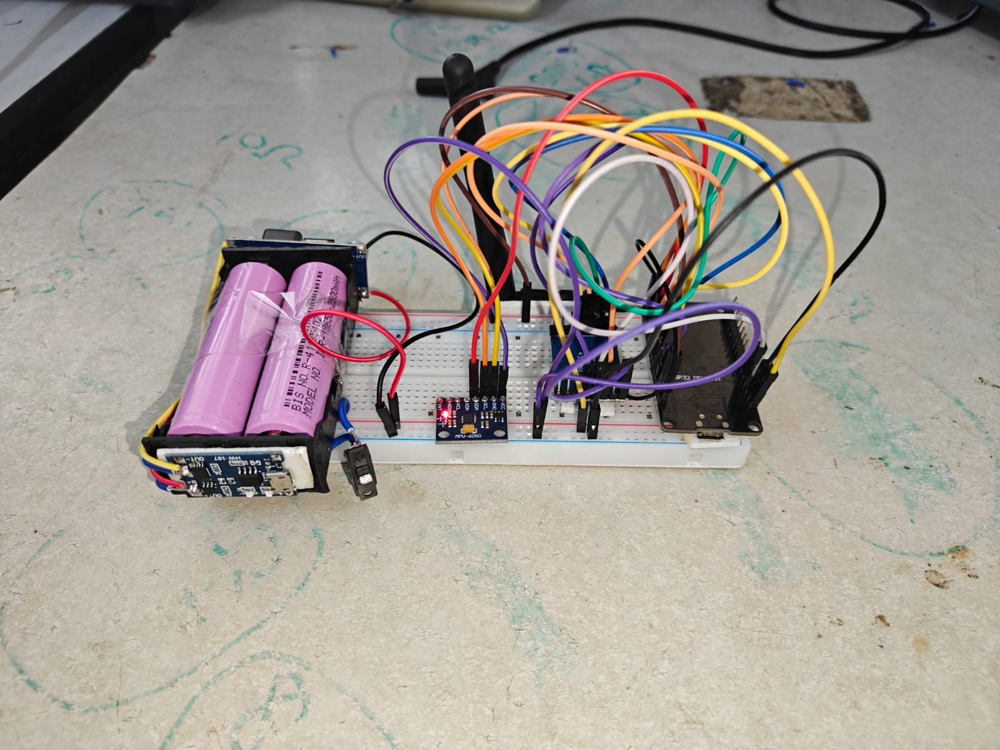
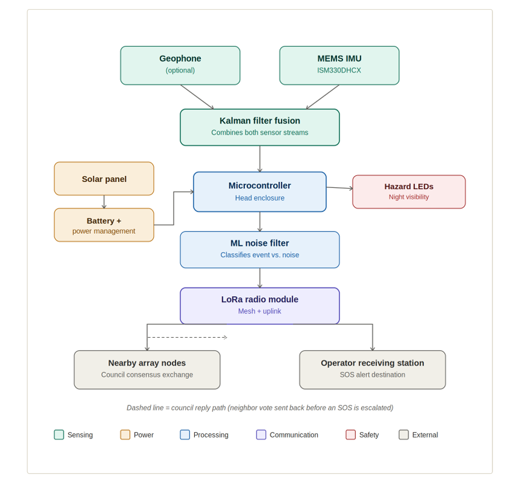
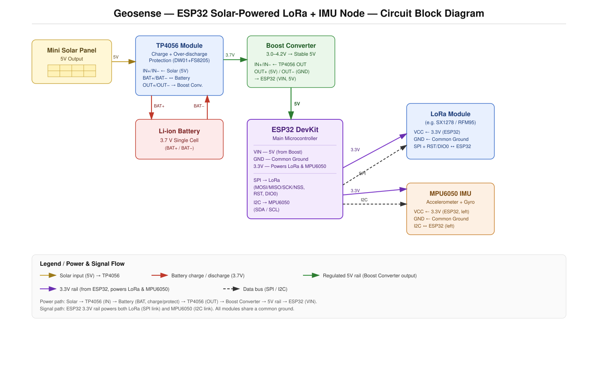
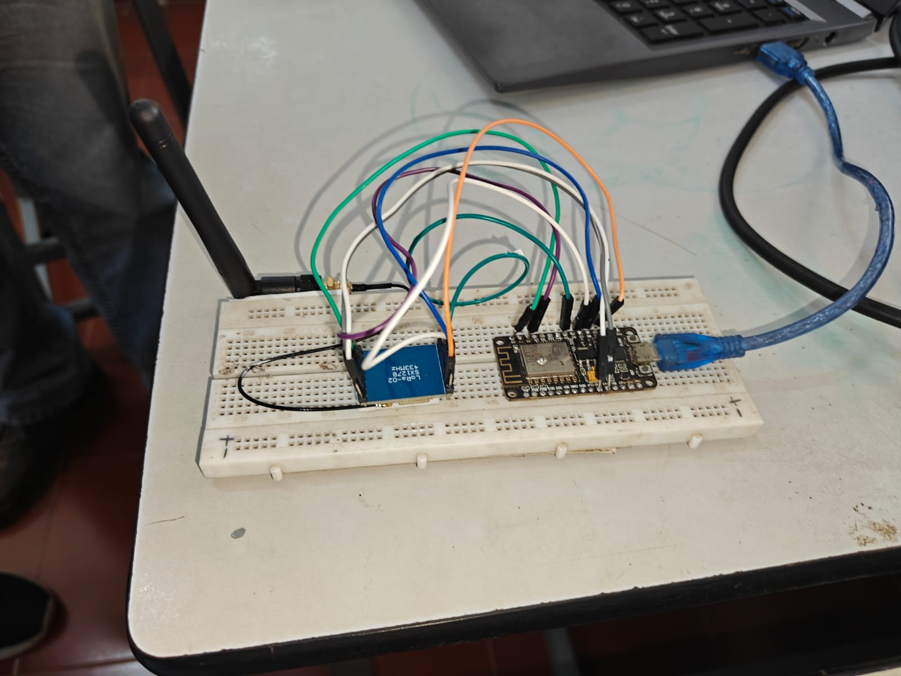
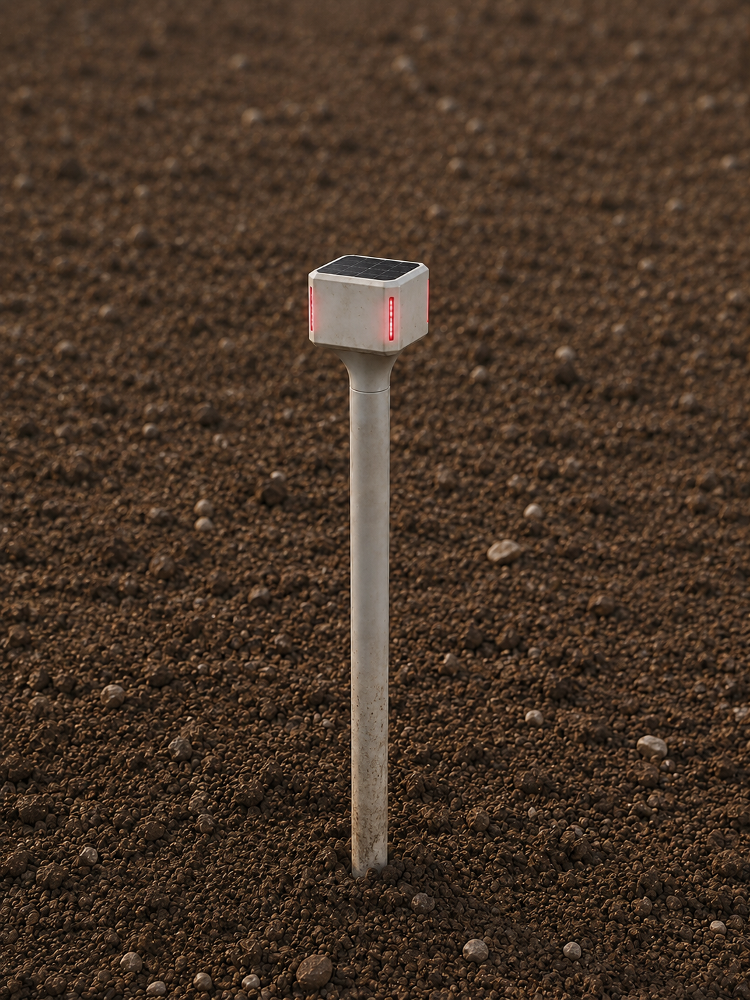
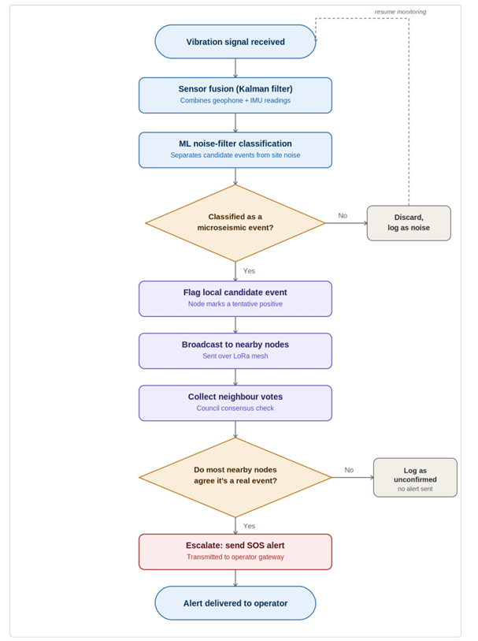

Land Subsidence & Landslide Early Warning System
Introduction
This is a device that is meant to be installed in mining areas or landslide-prone zones. It detects early signatures of landslides and land subsidence using tilt, micro-vibrations, and location sensors.
This was a product me and my team were developing for the Ministry of Coal and Mines during the Smart India Hackathon (SIH) competition.
The Problem & Engineering Approach
The Problem:
In open-cast and underground coal mines, slope failure and ground subsidence can happen suddenly with catastrophic consequences for human lives and heavy machinery. Traditional surveying methods or satellite radar (InSAR) are periodic, costly, and cannot provide real-time, seconds-ahead warning on the ground when slope instability starts developing. We needed an autonomous, field-deployable IoT sensor node that can stay out in harsh conditions 24/7 and yell before the ground moves.
Hardware Architecture:
We designed a multi-sensor wireless telemetry node. At its core, the unit uses an ultra-sensitive geophone (SM-4) to pick up micro-vibrations in the ground and an IMU unit (MPU-6050 for our prototype, upgrading to high-precision industrial ISM330DHCX) to measure subtle angular tilt variations.

Figure: Complete Node System Architecture — showing sensor subsystems (geophone & IMU), dual microcontrollers (ESP32 & ESP8266), SX1278 LoRa RF mesh, TP4056 BMS with Li-ion battery, solar harvesting, and 360° LED hazard beacon.

Figure: Circuit Schematic of the ESP32 Core, Sensor Interfacing & LoRa Transceiver.
Off-Grid Power & Long-Range LoRa Telemetry:
The sensor node is powered by an ESP32 microcontroller with power management handled via a TP4056 BMS module and an 18650 Li-ion battery kept charged by a compact 10×10 cm solar panel. Since mining pits often have zero cellular coverage or WiFi, we used SX1278 LoRa modules operating at 433/466 MHz to transmit packet telemetry over several kilometers back to a base receiver station.

Figure: LoRa Base Receiver & Alert Processing Unit.

Figure: Weather-resistant Field Enclosure & Ground Spike.
Components: Geophone (SM-4), IMU unit (ISM330DHCX / MPU-6050), 2× microcontrollers (ESP32 DevKit, NodeMCU ESP8266), 2× LoRa modules with whip antennas (SX1278, 433/466 MHz), 18650 3.7V Li-ion battery with TP4056 BMS protection circuit, 10×10 cm solar panel with DC-DC boost converter, solderless breadboards, terminal blocks, and custom jumper harnesses.
Detection Pipeline: The 'Council' Consensus System
The False-Alarm Problem in Active Mines:
In active mining environments, 50-ton dump trucks, excavation machinery, drilling, blasting, and surface traffic continuously transmit heavy vibrations into the ground. If an isolated IoT node were allowed to trigger an emergency evacuation alert every time its sensor spiked, false alarms would occur constantly—causing mine operators to quickly lose trust and ignore the system.
Trend-Based Precursor Prediction:
Our objective is prediction, not post-event recording. Rather than treating individual instantaneous spikes as emergencies, each node tracks statistical trends across sliding time windows: cumulative energy release, event frequency, and progressive angular tilt rate.
Two-Stage Verification & The 'Council' Vote:
To prevent rogue or faulty sensors from crying wolf, the network enforces a strict two-stage verification barrier:
- Stage 1 (Local Filtering): Raw sensor telemetry is passed through an on-node classification filter to differentiate benign surface machinery rumblings from genuine subsurface rock fracture dynamics and continuous tilt deviation.
- Stage 2 (The Multi-Node 'Council' Consensus): No single node can broadcast an emergency SOS alone. When a node detects an anomaly crossing Stage 1, it convenes an automated local peer “Council” by broadcasting an encrypted query to neighboring nodes over LoRa mesh. An emergency SOS is escalated to the operator control room only if a majority of nearby nodes in that sector corroborate the subsurface movement. If the anomaly is isolated to one unit, it is logged for maintenance inspection and suppressed from triggering false emergency sirens.
- Density as Anti-Hallucination: Spatial redundancy is the system's core defense. By deploying a dense array of low-cost nodes rather than a handful of expensive isolated instruments, more overlapping neighbors participate in every Council vote, driving false positives to near zero.

Figure: Per-Node Decision Making Tree — from continuous sensor sampling, through on-node filtering and trend evaluation, to the peer Council consensus voting stage and final SOS alert escalation.
Case Study & Recalculated Budget: Jharia Coalfield
The Jharia Hazard Context:
The Jharia Coalfield in Dhanbad, Jharkhand spans approximately 318 km² and represents one of the most critical subsidence disaster zones in the world. Subsidence in Jharia is driven by a dangerous dual hazard: decades of historic room-and-pillar underground coal mining voids combined with century-old subterranean coal fires that continuously hollow out supporting strata beneath dense settlements, railways, and highways.
Priority Hazard Zonation (48.7 km² Total):
Regional geological and remote sensing assessments classify subsidence vulnerability across Jharia into three key target zones:
- Very High Hazard Zone: 1.2 km² (areas where active subsurface coal fires directly intersect unstable underground mining voids)
- High Hazard Zone: 7.3 km²
- Moderate Hazard Zone: 40.2 km²
- Total Targeted High-Risk Area: 48.7 km²
Realistic Cost Recalculation (₹3,000–₹4,000 per Node):
Initial preliminary hackathon estimates tentatively cited ₹1,200–₹1,500 per node. However, a rigorous, production-grade Bill of Materials (BOM) including an industrial-grade MEMS IMU (ISM330DHCX-class with micro-g tilt resolution), dual-core ESP32 MCU, SX1278 LoRa transceiver, 18650 Li-ion battery, TP4056 BMS protection circuit, 10×10 cm polycrystalline solar panel, IP65/IP67 weatherproof casing, 1-meter steel ground spike, depth collar, and 360° LED hazard beacon realistically prices at ₹3,000 to ₹4,000 per node.
Recalculating the deployment budget across Jharia's target zones based on a ~100 m detection radius per node:
| Deployment Scenario | Target Area Covered | Node Count (~100m Radius) | Recalculated Budget (₹3,000–₹4,000 / Node) |
|---|---|---|---|
| Full Target Coverage | 48.7 km² (Very High, High & Moderate Zones) | ~1,500 – 1,700 nodes | ₹45 Lakh – ₹68 Lakh |
| Optimized Coverage | >80% of critical high-risk zones | ~1,200 nodes | ₹36 Lakh – ₹48 Lakh |
| High-Priority Pilot Phase | 8.5 km² (Very High & High Hazard Zones) | ~280 – 300 nodes | ₹9 Lakh – ₹12 Lakh |
Economic & Safety Viability:
Traditional monitoring options like borehole extensometers, automated total stations, or periodic satellite InSAR surveys cost tens of crores of rupees while failing to deliver continuous, real-time seconds-ahead warnings on the ground. Deploying an autonomous, solar-powered LoRa mesh network across an entire high-risk coalfield for ₹36–₹68 Lakh offers an unprecedented level of disaster prevention at a fraction of standard industrial geotechnical monitoring budgets.
Note: Demo video will be uploaded on YouTube and linked here soon.
References & Links
- › Smart India Hackathon (SIH) — Ministry of Coal & Mines Project Submission
- › Subsidence Prediction Network Documentation & Whitepaper (Google Drive) →